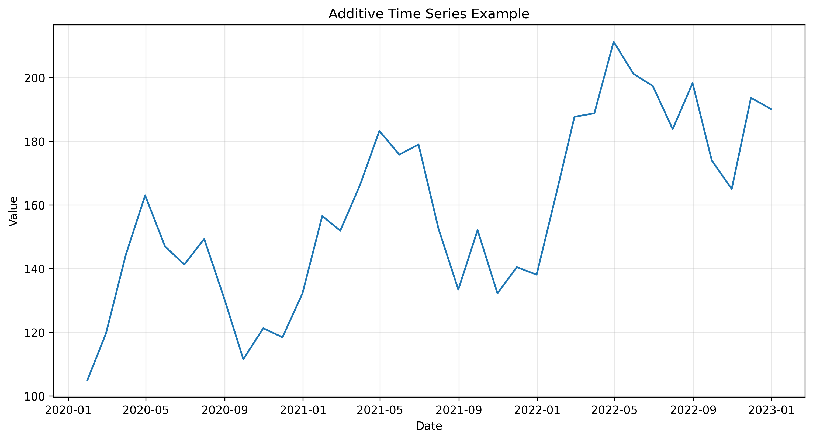
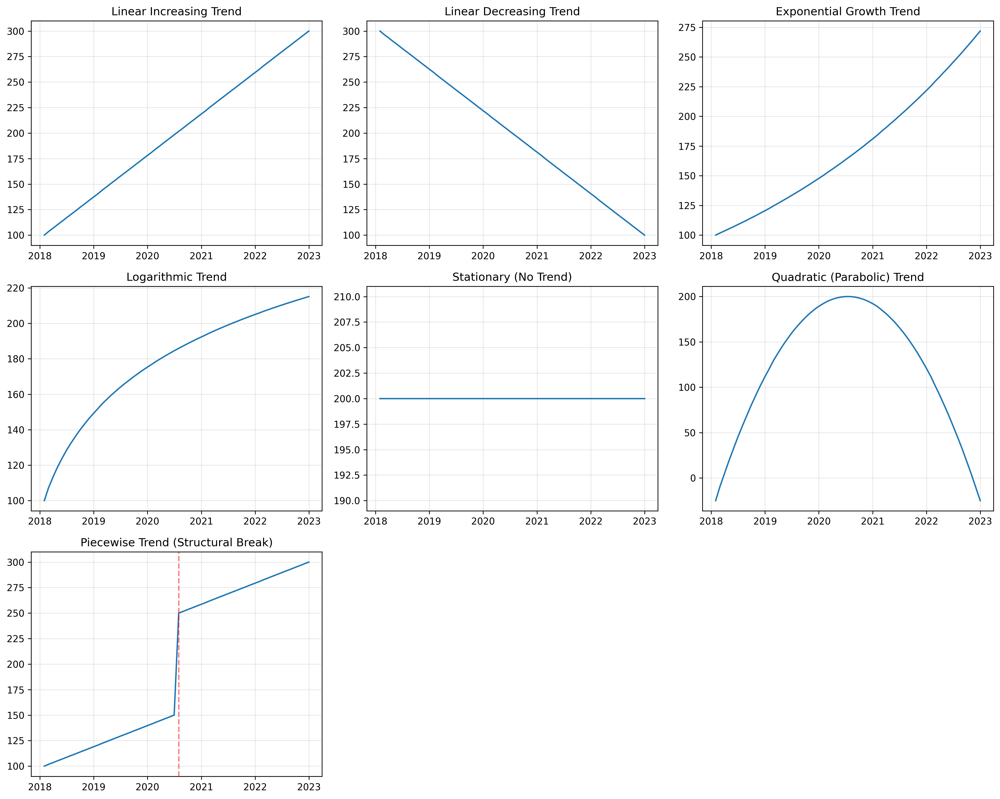
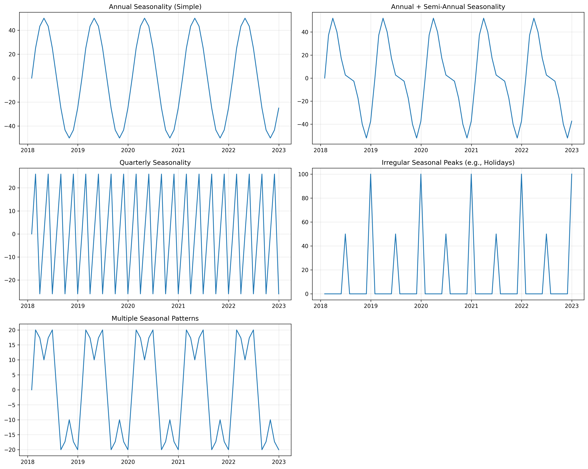
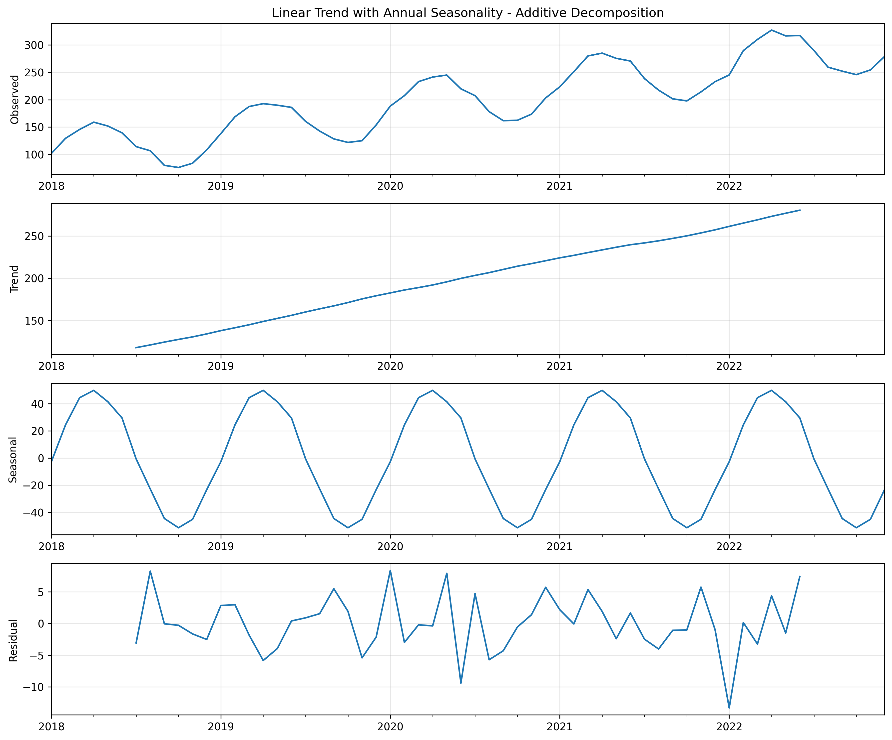
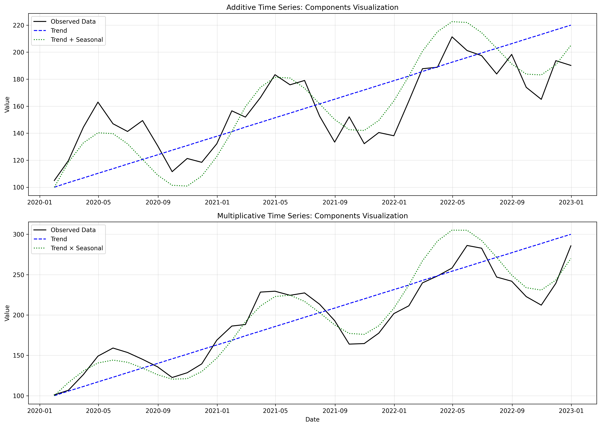
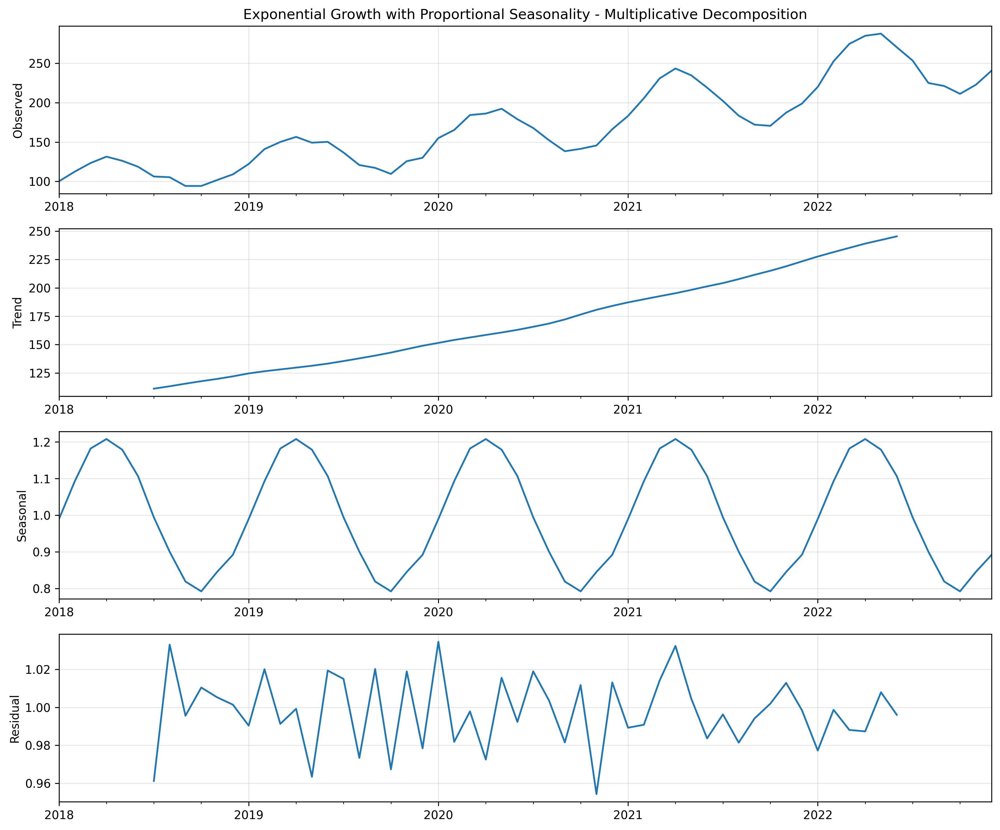

Time Series Forecasting: Understanding the Components
Time series forecasting is a fascinating part of data science and machine learning. I first encountered it during a machine learning course where we briefly covered various models and techniques like classification, regression, random forests, LSTMs, CNNs, and gradient boosted models. In that class I was tasked with predicting bike sales. When I mentioned what I was learning to a family member, they asked if these techniques could be applied to demand forecasting in the context of their specific business. I thought it couldn’t be too different from what I did in class, and said yes. I quickly discovered the depth and complexity of time series forecasting was so much greater than what I had thought before.
For this post, I’ve use python to create several fake datasets to clearly demonstrate time series concepts without the noise and complexity of real-world data. While synthetic, these examples reflect patterns commonly found in actual time series data.

This visualization shows a synthetic time series with trend, seasonality, and random variations. Even in this simplified example, we can observe several key characteristics of time series data:
- A clear upward trend over time
- Regular seasonal patterns that repeat at fixed intervals
- Random variations that create “noise” around these patterns
What Exactly is Time Series Forecasting?
Time series forecasting is the process of analyzing historical time-ordered data to predict future values. Unlike other types of predictive modeling, time series forecasting explicitly accounts for the temporal ordering and relationships in the data.
Life is full of patterns - we find them in nature, buildings, and data. Time series forecasting extracts these patterns from historical data to predict future outcomes. The defining characteristic is the time element: measurements recorded at consistent intervals, whether minutes, hours, days, weeks, or months. Consistency is crucial - if your data sometimes uses daily measurements and other times weekly, you must standardize to a single time unit before analysis.
Understanding Time Series Components
Before you can effectively forecast a time series, you need to understand its components. Most time series can be broken down into four primary components:
Trend Component
The trend represents the long-term progression of your series - whether values are generally increasing, decreasing, or remaining stable over time. As shown in Figure 2, trends can take many forms.
Identifying the correct trend pattern is crucial for making accurate long-term forecasts.

Seasonality Component
Seasonality refers to repeating patterns that occur at regular intervals. As shown in Figure 3, these patterns can vary widely:
- Annual patterns (think retail sales peaking during holidays)
- Quarterly patterns (often seen in financial data)
- Monthly, weekly, or daily cycles
- Irregular but predictable peaks (like special events)
- Multiple overlapping seasonal patterns
In retail data, for example, you might see weekly patterns (higher sales on weekends) overlaid with annual patterns (holiday shopping seasons).

Cyclicity Component
Cyclical patterns are longer-term fluctuations that don’t have a fixed frequency, unlike seasonality. Business cycles that affect performance over several years are a classic example, where boom and bust periods create waves in the data.
Residual (Noise) Component
After accounting for trend, seasonality, and cyclicity, what remains is the residual or noise component. This represents random, unpredictable variations that can’t be explained by the model. While true randomness can never be predicted, analyzing this component can provide insights into the volatility of your data and the reliability of your forecasts.
Decomposing a Time Series
Time series decomposition is the process of separating a time series into its component parts. This helps us understand the underlying patterns driving our data.

In Figure 5, we can see a time series broken down into its components: - The observed data (top panel) - The extracted trend (second panel) - The seasonal pattern (third panel) - The residual noise (bottom panel)
This decomposition follows an additive model, represented by the formula:
\[Y_t = T_t + S_t + C_t + R_t\]
Where: - \(Y_t\) is the observed value at time \(t\)
- \(T_t\) is the trend component
- \(S_t\) is the seasonal component
- \(C_t\) is the cyclical component
- \(R_t\) is the residual (noise) component
Additive vs. Multiplicative Decomposition
There are two main approaches to time series decomposition: additive and multiplicative.

Additive Model
In an additive model, the components are added together to form the original series:
\[Y_t = T_t + S_t + C_t + R_t\]
This model is appropriate when:
- The seasonal variations add a fixed amount regardless of the trend level
- For example, ice cream sales might consistently increase by exactly 1,000 units during summer months, whether your baseline is 3,000 or 8,000 units
- The data can have negative values (since multiplication by negative values can produce counterintuitive results)
In Figure 6 (top panel), you can see that the seasonal variations maintain a consistent amplitude regardless of the trend level.
Multiplicative Model
In a multiplicative model, the components are multiplied together:
\[Y_t = T_t \times S_t \times C_t \times R_t\]
This model is appropriate when:
- The seasonal variations represent a percentage of the trend level
- For example, retail sales might increase by 40% during December, meaning a much larger absolute increase when baseline sales are higher
- The data must be positive (since multiplication by zero or negative values distorts the pattern)
In Figure 6 (bottom panel), note how the seasonal variations grow larger as the trend increases.

Figure 7 shows the decomposition of a multiplicative series. Notice how the seasonal component is expressed as a ratio (values around 1.0) rather than absolute values.
The Critical Role of Domain Knowledge
The MOST important step when approaching time series forecasting is researching the domain your data comes from. If you’re working with sales data from a janitorial products warehouse, take time to understand that industry. Talk to people working in it to discover the key factors driving their sales. This domain knowledge will be invaluable as you build your models and interpret results.
Domain knowledge helps you:
- Identify expected patterns - Industry experts can tell you about normal seasonal fluctuations
- Explain anomalies - That unexplained spike might be due to a one-time event
- Understand structural changes - A sudden shift in the data might be explained by a change in business strategy or market conditions
- Select appropriate models - Different types of data require different modeling approaches
Without domain context, you risk misinterpreting the data or making incorrect forecasts. When you combine solid statistical techniques with domain understanding, time series forecasting becomes a powerful tool for business planning, resource usage, and strategic decision-making.
Real-World Complications
In practice, time series data is rarely as clean as our simple decomposition models suggest. Figure 4 highlights several real-world complications:
- Outliers: Unusual events can create extreme values (shown in the middle-right panel)
- Missing values: Data collection issues can lead to gaps in your time series
- Level shifts: Structural changes can cause permanent shifts in the level of your data
- Heteroscedasticity: The variance of your data might change over time, making some periods more volatile than others
Addressing these complications is an important part of time series forecasting, and will be covered in future posts.
Looking Ahead
In this post I introduced the foundational concepts of time series forecasting, including the components that make up a time series and the different approaches to decomposition. Understanding these concepts is crucial before diving into the practical implementation of forecasting models.
In my next post, I’ll explore how to implement these concepts in code, working with real-world datasets to build and evaluate forecasting models.